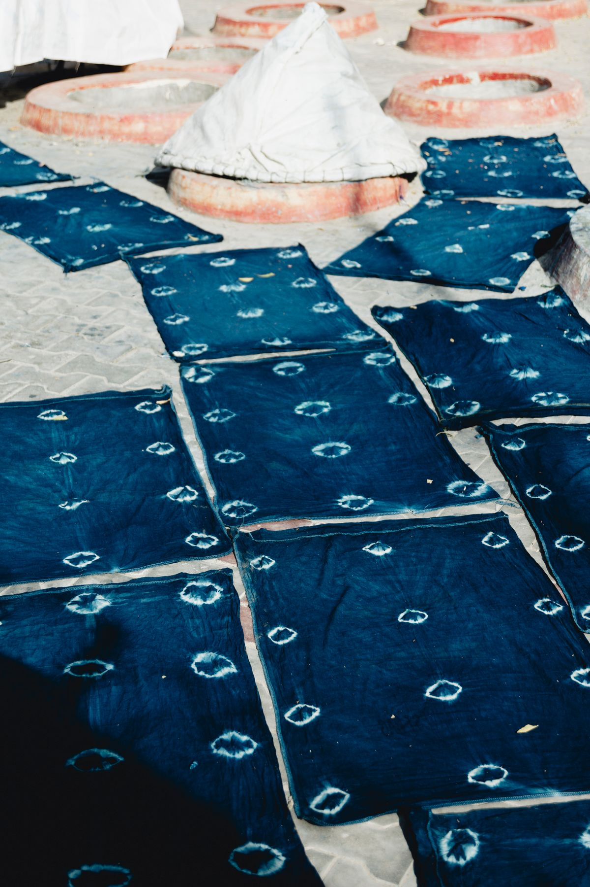

About
The woman at the cutting table
My grandmother wove in Nishijin, Kyoto's weaving district, and sewed at a table by the window for anyone in the street who asked. I learned wasai — Japanese dressmaking — standing at that table: how a kimono is not sized so much as read off a body, three measurements and a lifetime of looking.
In 2017 I opened this studio in a machiya near Demachiyanagi, where the Kamo river splits and the students cross to the university in yukata all summer. Nine summers on, the work is the same work: one bolt of cotton, one person's height, one festival it has to be ready for. Gion Matsuri is the hinge of my year — the floats go down Shijo-dori in July, and half of Kyoto is wearing something somebody sewed. I like knowing some of it was me.
I sew every garment myself, with help at the ironing board in June and July from my cousin Aya, who is faster than me and does not let me forget it.

The order of work
How a commission runs
Measure
Thirty minutes at the studio, or three numbers by email: height, hip over clothes, and yuki — neck to wrist. I check them against the cutting table before anything is cut.
Choose the bolt
Patterns are chosen in person where possible. If you are far away, a swatch of the actual bolt travels to you free — screens lie about blue.
One fitting
The garment is pinned and tried before the seams close. This is where a centimetre is argued about, and it is worth arguing about.
Collect & tie
You collect, or it travels by post in a paper wrap. At collection I tie your obi once, slowly, and then you tie it. Twice is a lesson; three times is muscle.
Opinions, held firmly
Two things I will argue about
Polyester is a raincoat
Every summer the chain shops fill with yukata sewn from polyester that shines like a wet umbrella. They are cheap, they do not crease, and they wear like raincoats — the heat stays in, the sweat stays in, and by the second hour of a fireworks night the wearer is steaming gently. Cotton costs more and breathes. A yukata is worn against the skin in the hottest month of the year; the cloth is not the place to save the money.
The station obi rescue
Every July I re-tie strangers' obi at Demachiyanagi station — good people, defeated by a tying video watched at the platform with a train coming. An obi is not difficult; it is only untaught. So the lesson is free with every obi I sell, at this table, at walking pace. If I have tied yours at the station: no charge, and you owe me a wave at the fireworks.
After it is yours
Care of cotton
Washing. Cold water, garment inside out, alone or with its own kind for the first two washes — ai-dyed cloth gives up a little colour at first and then settles for years. No tumble dryer; cotton remembers the shape it dried in.
Drying. On a wide hanger or a pole through the sleeves, in shade. Sun is for the dye vat's yard, not for a finished garment.
Storing. Folded on its seams, wrapped in paper, somewhere dry. Not on a wire hanger — a yukata left hanging all winter arrives at July with shoulders it never had.
Repairs. Seams that tire, hems that drop, tucks to let out as children grow: bring it back. Alterations run ¥2,200–¥3,500, and a garment I sewed is repaired at the honest end of that range.